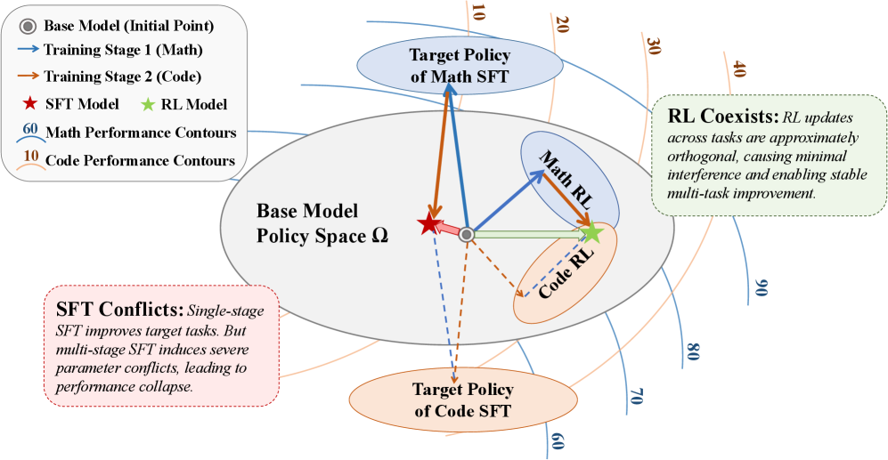
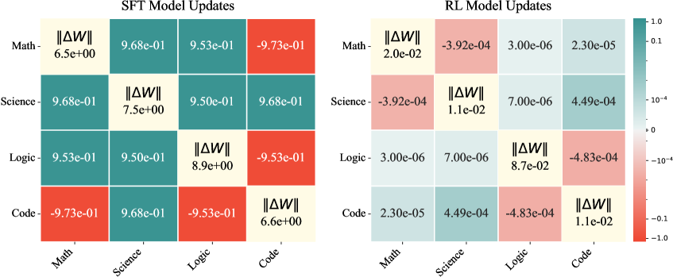

SFT Conflicts, RL Coexists: Gradient Interference in Multi-Task LLM Post-Training
TL;DR
- "SFT Conflicts, RL Coexists" (arXiv 2608.03573; Zhu, Jin, Tu, Yuan, Bai, Liu, Li, Zhao — Tsinghua/BUAA) explains a phenomenon practitioners keep hitting: train an LLM on tasks sequentially and SFT collapses (−23.1% vs base on average), while RL keeps accumulating (+24.9%). The cause is geometric, not incidental.
- The mechanism: RL induces sparse, small-magnitude, near-orthogonal parameter updates across tasks (average ‖ΔW‖ ≈ 3×10⁻², cosine similarity ≈ 10⁻⁵), whereas SFT updates are dense and overlapping (‖ΔW‖ ≈ 7.4, cosine similarity ≈ 10⁻¹–1.0). The paper proves SFT interference is norm-limited (∝ gradient magnitude) while RL interference is variance-limited (∝ intra-group rollout variance), which is tiny under on-policy sampling + advantage normalization.
- The payoff is Parallel-RL: because task updates barely interfere, you can train each task's RL independently in parallel and merge the ΔWs afterward — recovering 95–102.8% of single-task performance, with an "Adapted" variant (5% extra samples post-merge) beating even task-specific models by +9.4% over base.
Why this matters
Multi-task post-training has an ugly, well-known asymmetry that the field mostly works around by folklore. For SFT, everyone knows you must mix all your data together (mixed-data training) or the model forgets earlier tasks; sequential/multi-stage SFT is a known way to wreck a checkpoint. For RL, the opposite folklore holds — multi-stage curricula (math, then code, then...) work fine and are common. This paper is the first I've seen in the tracker to give that asymmetry a clean, quantitative, mechanistic explanation at the parameter level, and then turn the explanation into a training paradigm.
That matters for two reasons. First, it reframes a familiar RL observation ("RL barely changes the weights," "RL is a small nudge") as the reason multi-task RL is well-behaved: minimal, sparse updates in a high-dimensional space are almost surely orthogonal, so they don't step on each other. Second, if updates are orthogonal, the entire dependency structure of a training pipeline dissolves — you don't need to co-schedule tasks, tune mixture ratios, or run one long sequential job. You can fan out, train each RL task on its own hardware, and add the deltas. For anyone running RLVR at scale this is a genuinely practical unlock, and it connects the "RL's Razor / RL makes minimal changes" line of work to model-merging in a way that's more than analogy.
The core idea

Figure 1 from the paper: single-stage SFT improves target tasks, but multi-stage SFT induces severe parameter conflicts and collapse. RL updates across tasks are approximately orthogonal, causing minimal interference and enabling stable multi-task improvement.
Start from the two gradients. For expert policy \(\pi_{\text{expert}}\) and current policy \(\pi_\theta\):
Here \(A(x,y)\) is the advantage; SFT is off-policy (targets a fixed external distribution) while RL is on-policy (samples from the model itself) and reweights by \(A\). Those two differences — the advantage term and the policy source — are the whole story.
Define the score function \(S_{i,k}(x)=\nabla_\theta\log\pi_\theta(y_k\mid x)\) for the \(k\)-th rollout on task \(i\). The GRPO gradient is \(g_i(x)=\frac1G\sum_{k}\hat A_{i,k}(x)\,S_{i,k}(x)\), and GRPO advantages satisfy the zero-sum property \(\sum_{k=1}^{G}\hat A_{i,k}(x)=0\) (they're standardized within the group). That zero-sum property is the lever the whole analysis pulls.
How it works
Interference decomposition. The cross-task interference is the expected inner product of the two tasks' gradients. For SFT it depends directly on the expert score functions, \(\mathcal{I}_{\text{SFT}}(i,j)=\mathbb{E}[\langle S_i^*(x),S_j^*(x')\rangle]\). For RL, the zero-sum property lets you subtract the group mean \(\bar S_i(x)=\frac1G\sum_k S_{i,k}(x)\) for free, so only the residuals \(\delta S_{i,k}=S_{i,k}-\bar S_i\) survive:
The advantage weighting algebraically removes the dense common-mode direction \(\bar S\); what's left is the inner product of small, zero-mean, task-independent residual vectors.
Why residuals are near-orthogonal. The residual \(\delta S(x)\) captures intra-group divergence across \(G\) rollouts for the same input with fixed parameters — so it's inherently small. Two tasks' residuals come from independent data distributions, so they're statistically independent zero-mean vectors, and in the high-dimensional parameter space \(\mathbb{R}^d\) the concentration-of-measure phenomenon makes independent sparse zero-mean vectors approximately orthogonal with high probability: \(\mathbb{P}(|\langle\delta S_i,\delta S_j\rangle|\ge t)\le 2\exp(-c\,t^2 d)\).
The bounds (the load-bearing result). Under bounded expected norm \(M_i\) (SFT) and bounded intra-group variance \(V_i\) (RL), Theorem 4.5 gives:
SFT interference is capped by the absolute size of updates (large: \(\|S\|\approx7.1\)); RL interference is capped by rollout variance (small: \(\|\delta S\|\approx10^{-2}\), and it decays further as training converges). The light-touch, KL-minimal nature of on-policy RL (they invoke RL's Razor / Shenfeld et al.) is why \(V_i\) stays small.
Parallel-RL. Since \(\Delta W_i \perp \Delta W_j\), train each task's RL independently and merge: \(\theta_{\text{merged}}=\theta_0+\mathcal{M}(\{\Delta W_i\})\) for a merge function \(\mathcal{M}\). Variants: Naive (sum or mean of ΔWs); Sparse (TIES, or SVD keeping only the rank-1 direction of each ΔW, motivated by evidence that RL's effect concentrates in rank-1); Adapted (Naive-sum, then a fast pass on 5% of samples).
# Parallel-RL
for task i in {math, science, logic, code} # fully parallel, no shared state
ΔW_i = GRPO(base_model θ0, data_i) - θ0
θ_merged = θ0 + Merge({ΔW_i}) # sum | mean | TIES | rank-1 SVD
# optional Adapted step:
θ_final = quick_GRPO(θ_merged, 5%-sample of union(data_i))
# removing any single ΔW_i drops ONLY task i (−7.1%), others stay flat (+0.6%)
Results
Base models: DeepSeek-R1-Distill-Qwen 1.5B and 7B; four domains (Math/Science/Logic/Code) on MATH500+AIME2025, MMLU+GPQA, Knights & Knaves, LiveCodeBench; GRPO for RL; LoRA for the analysis experiments.
- The headline asymmetry. Multi-stage SFT: −23.1% vs base on average (Logic craters from 31.0 → 9.0). Mixed-data SFT: +7.4%. RL is robust either way: +24.9% multi-stage, +12.6% mixed-data. Single-task SFT improves the target +4.0% but costs −5.1% on untrained tasks; single-task RL improves the target +6.8% and nudges other tasks +2.3% — the "conflicts vs coexists" phenomenon in one table.
- Parameter geometry (Fig. 2): RL ‖ΔW‖ ≈ 3×10⁻² vs SFT 7.4 (two orders of magnitude); RL updates are ~20% dense vs SFT 93%; RL cross-task cosine similarity ≈ 10⁻⁵ vs SFT 10⁻¹–1.0 (Math vs Code SFT updates even point in opposite directions).
- Score-function metrics (Table 3): ‖S‖ ≈ 7.1 (SFT) vs 10⁻¹ (RL); ‖δS‖ ≈ 10⁻² (RL); CosSim(Sᵢ,Sⱼ) ≈ 10⁻¹ (SFT) vs 10⁻³ (RL). t-SNE shows RL score functions forming distinct per-task clusters while SFT distributions overlap heavily.
- Parallel-RL (Table 4): Naive-sum retains 95% of single-task RL and +5.0% over base, while Parallel-SFT-sum retains only 66%. TIES / SVD retain 98% / 96%. Adapted Parallel-RL retains 102.8% — it beats task-specific models — for +9.4% over base, at only 5% extra sample cost. Removing one ΔWᵢ drops that task −7.1% while others move +0.6%, confirming clean decoupling.

Figure 2 from the paper: diagonals are ‖ΔW‖ (L2 norm), off-diagonals are pairwise cosine similarity. Left (SFT): large, overlapping updates (similarity ≈ 1.0, some negative). Right (RL): near-zero cross-task similarity — orthogonal, task-specific adjustments.
How it connects
- RLSVR / RL with Self-Verifiable Rewards, ISO: An RLVR-Native Optimizer, One-Layer RL Post-Training — this paper is the "why is RL so well-behaved?" theory beneath the RLVR wave; the sparsity/orthogonality it documents is exactly what makes those methods composable.
- HL-Gauss PPO and Trace: Turn-Level Rewards — both lean on advantage normalization; this work shows that same normalization (the zero-sum property) is what algebraically kills common-mode gradient interference across tasks.
- RL Pretraining Scaling Law and IPE: Q-Pretraining — complementary "RL as a gentle, KL-minimal update" framing; Parallel-RL's rank-1 SVD merge echoes the "RL's effect is low-rank" thread.
- Distillation items (OPD survey, on-policy delta distillation) — a sharp contrast: SFT/off-policy distillation is the dense-overlapping-update regime this paper warns about, which is one more argument for the on-policy distillation methods elsewhere in the tracker.
Critical take
The theory is clean and the phenomenon is real, but read the scope carefully before you re-architect a pipeline around it. Everything is DeepSeek-R1-Distill-Qwen at 1.5B/7B on four fairly distinct reasoning domains — the near-orthogonality argument leans on the tasks being statistically independent, and it's an open question what happens when tasks genuinely overlap (two flavors of math, or instruction-following that touches everything), where you'd want some interference to share capability. The bounds are also worst-case magnitude bounds (\(M_iM_j\) vs \(V_iV_j\)), not a proof that RL interference is beneficial or even that it's always smaller in practice — they explain the observed gap given the measured norms, which is a slightly weaker claim than the framing suggests. Parallel-RL's best variant ("Adapted") quietly reintroduces a joint training step on 5% of data, so the fully-decoupled story is really "80% decoupled + a small merge-repair," and the merge functions (TIES, rank-1 SVD) are the same finicky model-merging machinery that's brittle at scale elsewhere. Finally, "RL coexists" is measured on capability retention, not on whether the merged model reasons jointly across domains — coexistence isn't composition. Still, as an explanation for why practitioners mix SFT data but stage RL, and as a license to fan RL out across tasks, this is one of the more immediately useful theory papers in the tracker.
If you remember three things
- The asymmetry is geometric. SFT makes dense, large, overlapping weight updates that fight across tasks (multi-stage SFT: −23.1%); RL makes sparse, tiny, near-orthogonal updates that coexist (multi-stage RL: +24.9%). Cosine similarity across tasks: ~10⁻¹–1.0 for SFT vs ~10⁻⁵ for RL.
- Advantage normalization is the mechanism. GRPO's zero-sum advantages subtract the dense common-mode gradient, leaving only small on-policy residuals; interference is thus norm-limited for SFT (\(M_iM_j\)) but variance-limited for RL (\(V_iV_j\)), and \(V_i\) is minuscule and shrinks as training converges.
- Orthogonality buys parallelism. If task updates don't interfere, you can train each task's RL independently and merge the deltas — Parallel-RL keeps 95–102.8% of single-task performance, and an "Adapted" merge with 5% extra samples beats task-specific models, turning sequential curriculum RL into an embarrassingly-parallel fan-out.